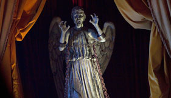
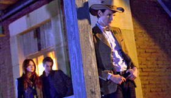

A SÉrie

A série de ficção científica de maior sucesso de todos os tempos acompanha as aventuras de um misterioso viajante do tempo que já salvou o universo diversas vezes.
PERSONAGENS E DISPOSITIVOS
O 11º Doutor está de volta, acompanhado na TARDIS por Amy Pond e seu novo marido Rory e há ainda outro encontro com a intrigante River Song.
Monstros e Vilões
O doutor sempre teve inimigos. Conheça as criaturas extraordinárias que ele já enferentou e descubra que novas ameaças o aguardam.
GUIA DE EPISÓDIOS

Descubra o que o Doctor, Amy e Rory têm pela frente ao enfrentar novos perigos, encontrar velhos amigos e ter seus relacionamentos testados até o limite.
Vídeo
Aqui está a sua chance de assistir a clipes e promos da série, incluindo trailers dos episódios.